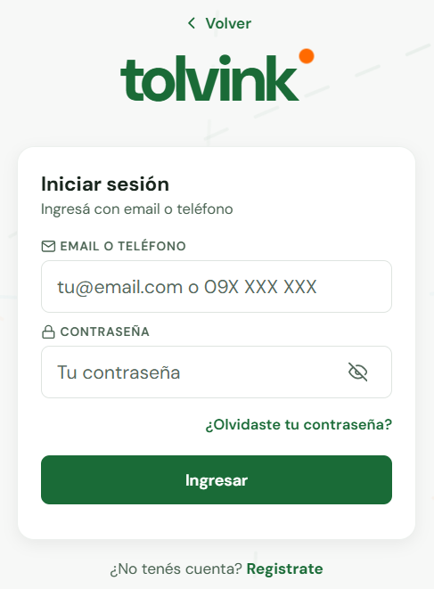
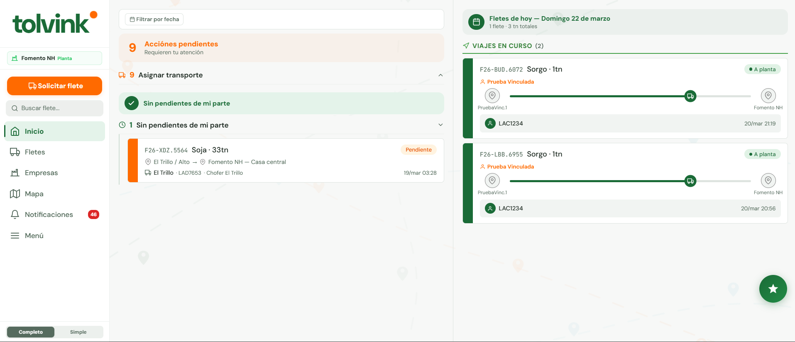
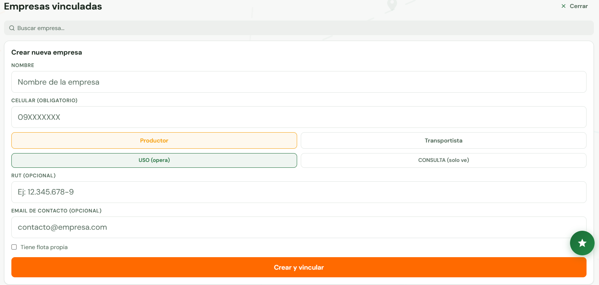
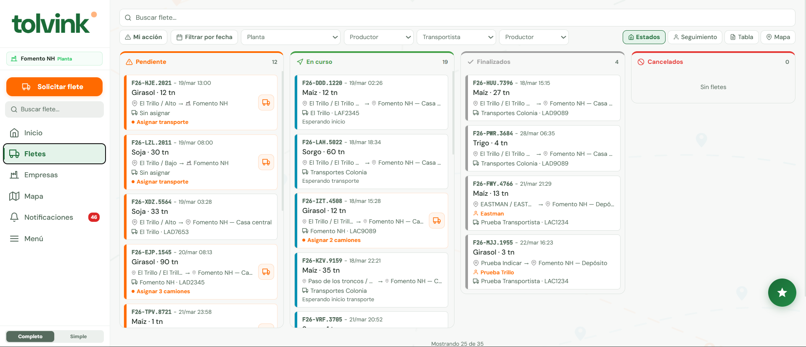
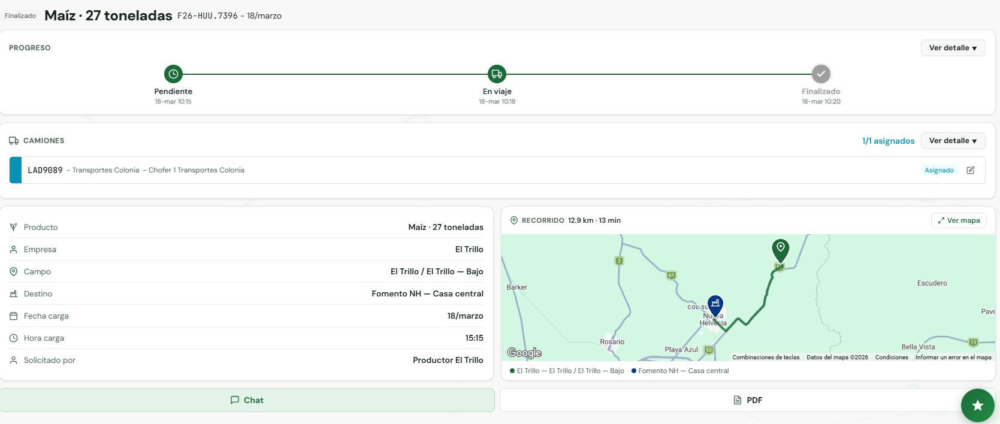
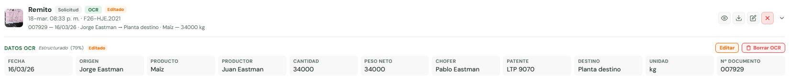
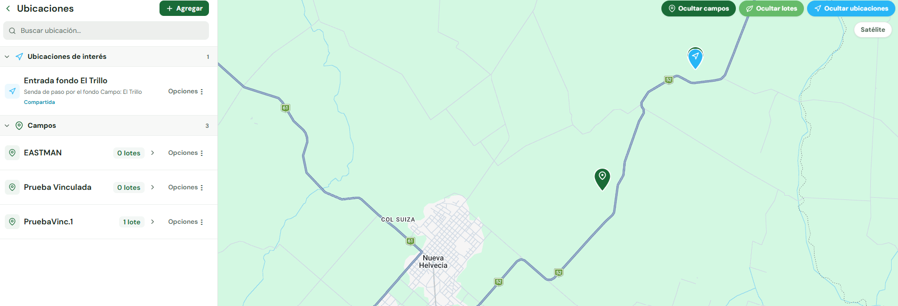

0.1. ¿Qué es Tolvink?
Tolvink es una app que te permite gestionar los fletes de granos desde el celular o la computadora, sin papeles ni llamadas.
Conecta a todos los actores de la cadena de granos: la planta que recibe, el productor que envía, el transportista que mueve y el chofer que maneja. Todos ven la misma información en tiempo real.
¿Qué resuelve?
Hoy llamás por teléfono para saber si el camión salió. Con Tolvink lo ves en el mapa. Hoy los remitos se pierden en la cabina del camión. Con Tolvink los escaneás y quedan digitalizados para siempre.
0.2. Glosario
| Palabra | Qué es en Tolvink | Ejemplo |
|---|---|---|
| Flete | Un viaje de grano de un punto A a un punto B | 30tn de soja de Campo La Esperanza a Fomento NH |
| Planta | La empresa que recibe el grano (acopio, silo) | Fomento NH, que tiene silos en Nueva Helvecia |
| Productor | Quien produce y envía el grano | Juan Pérez, con campos en Soriano |
| Transportista | La empresa que mueve el grano en camión | Transportes Colonia SRL |
| Chofer | La persona que maneja el camión | Carlos, que maneja el Mercedes LAC1234 |
| Estado | En qué momento está el flete | Pendiente, Asignado, A campo, A planta, Finalizado |
| CONSULTA | Nivel de acceso: solo podés ver | El productor ve sus fletes pero la planta los gestiona |
| USO | Nivel de acceso: podés ver Y operar | El transportista acepta fletes y asigna camiones |
| Campo | Establecimiento rural de donde sale el grano | Campo La Esperanza, Ruta 2 km 185 |
| Lote | Parcela dentro del campo | Lote 3 del Campo La Esperanza |
| Ticket de pesaje | Comprobante de la balanza | Bruto 45.200 kg, Tara 12.700 kg, Neto 32.500 kg |
| OCR | Lectura automática de documentos con IA | Foto del remito → Tolvink extrae los datos solo |
| Link compartible | Link para ver un flete sin cuenta | Se lo mandás al productor y ve el camión en el mapa |
| Empresa vinculada | Empresa conectada a la tuya en Tolvink | Fomento NH vinculó a Transportes Colonia |
| Movimiento | Viaje de un camión que no es un flete | Reposicionamiento, viaje a taller, traslado |
| Resumen económico | Dashboard de ingresos, gastos y eficiencia del camión | Costo por km, km/litro, resultado neto |
| Vencimiento | Fecha límite de un documento del camión | VTV vence el 15/04 → badge amarillo |
| Camión de terceros | Camión no registrado en el sistema, identificado solo por matrícula | Camión ABC 1234 de Transportes López — coordinado por teléfono |
| Multi-camión | Flete que requiere más de un camión, pudiendo combinar tipos | 2 camiones propios + 1 externo + 1 delegado a planta |
| Delegar a planta | Dejar que la planta asigne el transporte por vos | El productor delega 3 camiones a Fomento NH |
0.3. ¿Qué tipo de usuario sos vos?
¿Qué puede hacer cada uno?
| Acción | Planta | Prod. USO | Prod. CONSULTA | Transp. USO | Transp. CONSULTA | Chofer |
|---|---|---|---|---|---|---|
| Ver fletes | ✅ | ✅ | ✅ | ✅ | ✅ | ✅ |
| Crear fletes | ✅ | ✅ | ❌ | ❌ | ❌ | ❌ |
| Asignar camión propio | ✅ | ✅ | ❌ | ❌ | ❌ | ❌ |
| Asignar camión de terceros | ✅ | ✅ | ❌ | ❌ | ❌ | ❌ |
| Asignar transportista | ✅ | ❌ | ❌ | ❌ | ❌ | ❌ |
| Aceptar flete | ❌ | ❌ | ❌ | ✅ | ❌ | ❌ |
| Marcar "en viaje" | ✅ | ✅ | ❌ | ✅ | ❌ | ✅ |
| Confirmar carga/entrega | ✅ | ✅ | ❌ | ✅ | ❌ | ✅ |
| Gestionar campos | ✅ | ✅ | ❌ | ❌ | ❌ | ❌ |
| Gestionar flota | ✅ | ✅ | ❌ | ✅ | ❌ | ❌ |
| Delegar a planta | ❌ | ✅ | ❌ | ❌ | ❌ | ❌ |
| Compartir por WA | ✅ | ✅ | ✅ | ✅ | ✅ | ❌ |
0.4. Dos formas de usar Tolvink
Desde la web/app
Entrás a tolvink.com desde el celular o la computadora. Funciona como una app: podés instalarla en la pantalla de inicio del celular para acceso rápido.
Desde WhatsApp
Le escribís al número de Tolvink por WhatsApp y una inteligencia artificial te ayuda. Podés consultar fletes, crear nuevos, y hacer seguimiento — todo por chat, incluso con audios.
0.5. Cómo crear tu cuenta
- Entrá a tolvink.com desde tu navegador
- Tocá "Registrate"
- Completá: nombre, teléfono (09XXXXXXX), email y contraseña
- Si tu empresa ya existe, seleccionala. Si no, se crea una nueva
- ¡Listo! Ya podés iniciar sesión

Referencia: Estados del flete
| Estado | Color | Qué significa | ¿Quién lo activa? |
|---|---|---|---|
| Borrador | Gris | Flete guardado sin confirmar | Creador |
| Pendiente | Naranja | Creado, falta asignar transporte | Creador |
| Asignado | Celeste | Transporte asignado, esperando aceptación | Planta o productor |
| A campo | Verde claro | Camión en camino al campo | Transportista, chofer, o auto (CONSULTA) |
| A planta | Verde | Camión cargado, en ruta a la planta | Chofer o gestión manual |
| Finalizado | Gris | Entrega confirmada | Planta o confirmación de entrega |
| Cancelado | Rojo | Cancelado por cualquier motivo | Planta, productor o transportista |
Referencia: Navegación e íconos
| Ícono | Sección | Qué encontrás |
|---|---|---|
| Inicio | Resumen del día, pendientes, viajes activos | |
| Fletes | Lista completa con filtros | |
| Empresas | Productores y transportistas vinculados | |
| Mapa | Campos, plantas y camiones en ruta | |
| Notificaciones | Alertas de cambios de estado | |
| Menú | Flota, Documentos, Calendario, Estadísticas, Admin |
Referencia: Atajos útiles
- Duplicar flete: en el detalle, tocá "..." → Duplicar
- Filtrar por estado: en la lista de fletes, tocá un estado para filtrar
- Crear campo rápido: durante la creación del flete, en el paso de origen, podés crear un campo nuevo
- Buscar empresa: en los select escribí las primeras letras para buscar
- Instalar como app: en Chrome mobile, menú (tres puntos) → "Agregar a pantalla de inicio"
1.1. Tu pantalla de inicio — Planta
Cuando entrás a Tolvink como planta, ves tres secciones principales:
- Pendientes — Fletes que necesitan tu atención
- Fletes de hoy — Viajes programados para la fecha actual
- Viajes en curso — Camiones en camino, con seguimiento en mapa

1.2. Vincular empresas
Vincular es conectar a un productor o transportista a tu planta. Sin esta conexión, no podés crear fletes con esa empresa.
Paso a paso
- Andá a Empresas en la navegación
- Tocá "+ Nueva empresa"
- Elegí "Crear nueva" o "Vincular existente"
- Completá nombre, teléfono, tipo (productor o transportista) y nivel (USO o CONSULTA)
- Tocá "Crear y vincular"

USO vs CONSULTA
| Característica | USO (Operador) | CONSULTA (Solo lectura) |
|---|---|---|
| ¿Qué puede hacer? | Ver, crear, modificar, aceptar | Solo ver |
| ¿Quién gestiona? | La empresa gestiona lo suyo | Tu planta gestiona por ellos |
| Ideal para | Empresas grandes con independencia | Empresas chicas que prefieren que vos manejes todo |
1.3. Crear un flete
Tiempo estimado: 2-3 minutos
- Seleccionar productor — Elegí de la lista de productores vinculados, o seleccioná "Uso interno" para crear un flete propio de la planta (sin productor externo)
- Producto — Soja, Maíz, Trigo, Girasol, Sorgo, Cebada u Otros
- Cantidad — Toneladas estimadas y cantidad de camiones necesarios
- Origen — Campo y lote del productor (o de la planta si es uso interno). Podés crear uno nuevo desde acá
- Destino — Tu planta, una sucursal, o un destino personalizado. Si es personalizado, indicá quién debe confirmar el viaje (Planta o Nadie)
- Transporte — Elegí cómo transportar:
- Flota propia — Seleccioná camión y chofer de tu flota
- Camión de terceros — Ingresá matrícula, empresa y chofer manualmente (camión no registrado)
- Transportista vinculado — Seleccioná una empresa de tu lista
- Asignar después — Dejá el transporte pendiente
- Fecha y hora — Fecha y hora de carga programada
- Revisá el resumen y tocá "Confirmar"
Multi-camión: asignación combinada
Si el flete necesita más de un camión, el paso de transporte muestra un cabezal "Se necesitan X camiones" con un contador de progreso. Podés combinar distintos tipos:
- Agregar camiones de flota propia (seleccioná camión + chofer, tocá "Agregar camión")
- Agregar camiones de terceros (ingresá matrícula, tocá "Agregar camión externo")
- Delegar a planta los restantes (indicá cantidad y a qué planta)
Cada camión agregado aparece en una lista con botones +/− para ajustar cantidad y ✕ para eliminar. Podés avanzar sin completar todos los camiones — se asignan después desde el detalle del flete.
¿Qué pasa después de crear?
| Escenario | Estado | ¿Qué sigue? |
|---|---|---|
| Sin transporte | Pendiente | Asigná transporte desde el detalle |
| Transportista USO | Asignado | El transportista acepta y asigna camión |
| Transportista CONSULTA | A campo | Avanza automáticamente — solo falta finalizar |
| Flota propia | Asignado | Autorizá el viaje, luego el chofer inicia |
| Camión de terceros | Asignado | Controlás todo el ciclo manualmente (iniciar, cargar, finalizar) |
| Multi-camión mixto | Asignado | Cada camión avanza independientemente |
1.4. Seguimiento de fletes
La lista de fletes
En Fletes ves todos tus fletes organizados por estado en columnas: Pendientes, En curso, Finalizados y Cancelados. Podés filtrar por fecha, producto, transportista y más.

El detalle del flete
Tocá cualquier flete para ver: estado actual, barra de progreso, datos del viaje, camión y chofer, mapa con ruta, documentos y botones de acción.

Cambiar el estado
| Si productor es... | Y transportista es... | Entonces... |
|---|---|---|
| CONSULTA | CONSULTA | Salta automáticamente hasta "A campo". Solo tocás "Finalizar entrega". |
| CONSULTA | USO | El transportista acepta, asigna camión/chofer, y marca el progreso. |
| USO | CONSULTA | El productor gestiona la creación, transporte se asigna directo. |
| USO | USO | Cada parte gestiona lo suyo. |
1.5. Asignar transporte
Desde el detalle del flete, tocá "Asignar transporte". El modal te ofrece 4 modos:
- Empresa — Seleccioná un transportista vinculado. Si es USO, el transportista asigna camión. Si es CONSULTA, vos elegís camión y chofer.
- Flota propia — Elegí camión y chofer de tu propia flota.
- Externo — Ingresá manualmente matrícula, empresa y chofer para un camión de terceros no registrado en el sistema.
- Delegar — Para productores: delega la asignación a la planta destino.
Sugerencias de asignación
Tolvink recomienda transportistas basándose en 5 factores: proximidad, capacidad, historial, disponibilidad y confiabilidad. Si tenés flota propia, tus camiones aparecen con bonus de prioridad.
Multi-camión
Podés asignar varios vehículos al mismo flete. Desde el detalle, tocá el botón "+" para agregar otro viaje. Cada asignación puede ser de un tipo diferente:
- Flota propia (camión + chofer registrado)
- Transportista vinculado (empresa USO u CONSULTA)
- Camión de terceros (matrícula manual)
En la pantalla de inicio, los fletes multi-camión pueden aparecer en múltiples grupos a la vez. Por ejemplo, si un camión está listo para iniciar y otro está pendiente de asignar, el flete aparece en "Iniciar viaje" y en "Asignar transporte" simultáneamente.
Editar camión de terceros
Desde el detalle del flete, tocá el ícono de edición ✏️ en la tarjeta del camión externo para cambiar matrícula, empresa o nombre del chofer. Solo el creador de la asignación puede editarla.
1.6. Documentos y OCR
Todo lo que se adjunta a un flete queda digitalizado: remitos, tickets de pesaje, cartas de porte.
Procesar con OCR
- Subí la foto del documento al flete
- Tocá "Procesar con OCR"
- Tolvink extrae: peso bruto, tara, neto, producto, patente, fecha, etc.
- Revisá, corregí si hace falta, y guardá

1.7. Compartir información
| Tipo de link | ¿Qué muestra? | Duración |
|---|---|---|
| Flete | Detalle completo con mapa | 72 horas |
| Portal | Lista de fletes de una empresa | 30 días |
| Ticket | Ticket de pesaje individual | 7 días |
En el detalle del flete, tocá el ícono de compartir. Copiá el link o mandalo directo por WhatsApp al productor. La otra persona ve todo sin necesitar cuenta.
1.8. Ubicaciones
Crear un campo
- Andá a Mapa en la navegación
- Tocá "+ Agregar" → "Nuevo campo"
- Ingresá el nombre, marcá la ubicación en el mapa
- Seleccioná la empresa propietaria
- Tocá "Guardar"

Como planta, podés gestionar campos para productores vinculados. Un productor CONSULTA los ve pero no puede modificarlos.
1.9. Flota y gestión de camiones
La sección de flota permite registrar camiones y choferes, y gestionar toda la operativa de cada vehículo: documentos con control de vencimiento, gastos, ingresos, movimientos y un resumen económico.
Lista de flota
En Menú → Flota ves todos tus camiones con indicadores rápidos:
- Resultado del mes — verde si es positivo, rojo si es negativo
- Km del mes — kilómetros recorridos
- Alertas de documentos — badge rojo si tiene vencidos, amarillo si están por vencer
Arriba de la lista hay un resumen de toda la flota: ingresos, gastos, resultado neto, km totales y el camión con mejor rendimiento del mes.
Crear un camión
- Tocá "Agregar"
- Completá: patente (obligatorio) y modelo (opcional)
- El camión queda listo para recibir asignaciones de flete
Crear un chofer
- En la pestaña Choferes, tocá "Agregar"
- Completá: nombre y teléfono (opcional)
Detalle del camión
Tocá un camión en la lista para abrir su ficha completa con 6 pestañas:
Pestaña: Resumen económico
Dashboard con las métricas clave del camión para el período seleccionado:
- Resultado: Ingresos cobrados − Gastos = Resultado neto
- Operación: Km totales, viajes, horas en ruta, km/litro
- Eficiencia: Costo por km, ingreso por km, % de km productivos
- Desglose: Gastos por tipo (barras con porcentaje), ingresos pendientes/vencidos
Pestaña: Fletes
Muestra los fletes activos del camión y el historial de completados.
- Cada flete finalizado tiene un botón "Cargar datos de viaje"
- Podés registrar: km con carga, km vacío, litros de combustible, precio por litro, peajes, odómetro
- Un ✓ verde indica que ya tiene datos cargados; "km?" gris indica que faltan
Pestaña: Ingresos
Registro de ingresos asociados al camión.
- Tocá "Nuevo ingreso"
- Completá: concepto, monto, moneda, fecha, estado (Pendiente / Cobrado / Vencido)
- Opcionalmente, vinculá a un flete — el concepto se auto-completa con origen → destino
- Podés adjuntar una factura (imagen o PDF)
Estados de ingreso: Pendiente · Cobrado · Vencido
Pestaña: Gastos
Registro de gastos del camión con comprobante opcional.
Tipos disponibles: Combustible, Peaje, Mantenimiento, Neumáticos, Seguro, Multa, Estacionamiento, Viáticos, Otro.
Arriba ves el total del mes actual vs el mes anterior.
Pestaña: Movimientos
Viajes que no son fletes de la plataforma: reposicionamiento, viaje a taller, traslados internos, uso particular.
- Tocá "Nuevo movimiento"
- Elegí el tipo de movimiento
- Seleccioná origen y destino (3 modos: escribir, elegir una ubicación guardada, o marcar en el mapa)
- Completá: fecha/hora de salida y llegada, km, combustible, peajes
Pestaña: Documentos
Carpeta general con TODOS los documentos del camión, vengan de donde vengan.
- Cada documento muestra un badge de origen: General, Gasto, Ingreso, Flete, Movimiento
- Filtros por origen y tipo de documento
- Control de vencimiento: verde = vigente, amarillo = vence en 30 días, rojo = vencido
- Tipos: ITV, Seguro, Habilitación de transporte, Licencia de conducir, Habilitaciones BPS-DGI, GET, Permiso nacional de circulación
1.9b. Calendario
En Menú → Calendario ves tus fletes organizados por fecha. Podés navegar entre meses y ver cuántos fletes hay cada día, agrupados por estado.
1.9c. Analítica
En Menú → Analítica ves estadísticas de tu operación:
- Resumen de fletes (totales, por estado)
- Desglose por productor, por producto, por mes
- Ranking de transportistas
1.9e. Tickets de pesaje
En Menú → Tickets ves todos los tickets de balanza registrados en tus fletes.
- Cada ticket tiene: peso bruto, tara, neto, humedad, impurezas
- Podés procesar la foto del ticket con OCR para extraer los datos automáticamente
- Filtrar por origen, destino, fecha
1.9f. Asistente IA en la app
El botón flotante en la esquina inferior derecha abre el asistente IA de Tolvink directamente en la app.
¿Qué puede hacer?
- Consultar fletes: "¿Cómo van mis fletes?" → muestra resumen
- Crear fletes por chat: "Mandá 30 de soja a Sofoval" → flujo guiado
- Navegar: "Quiero ver mis fletes" → te lleva a la lista y minimiza el chat
- Subir archivos: tocá el ícono de clip 📎 para adjuntar documentos o fotos
- Audio: grabá un mensaje de voz y el asistente lo transcribe
Los códigos de flete (ej: F26-ABC.1234) que aparecen en las respuestas son clickeables — te llevan al detalle del flete.
1.10. Administración
- Andá a Menú → Admin
- En Usuarios, editá datos, cambiá roles, o desactivá usuarios
- Podés crear usuarios para empresas vinculadas
- Para importar masivamente, tocá "Importar Excel" y usá la plantilla modelo
2.1. Productor USO
Tenés control total: creás fletes, elegís transporte, gestionás tus campos y hacés seguimiento.
Crear un flete
- Tocá "Solicitar flete"
- Completá producto, cantidad, origen (tu campo y lote), destino (planta o personalizado)
- Elegí transporte — tres opciones:
- Flota propia — Seleccioná camión y chofer de tu flota
- Terceros — Ingresá matrícula de un camión no registrado (empresa y chofer opcionales)
- Delegar a planta — La planta asigna el transporte
- Ingresá fecha y hora de carga
- Revisá el resumen y tocá "Confirmar"
Multi-camión
Si el flete necesita más de un camión, el paso de transporte te permite combinar tipos:
- Agregá camiones de flota propia (con botón "Agregar camión")
- Agregá camiones de terceros (con botón "Agregar camión externo")
- Delegá los restantes a la planta (con botón "Delegar N camiones a [Planta]")
Cada camión en la lista tiene botones +/− para ajustar cantidad. Si el destino no es una planta registrada, al delegar te pide seleccionar a qué planta delegar.
2.2. Productor CONSULTA
Tu planta se encarga de todo. Vos solo ves cómo van las cosas. Y está bien — es la opción ideal si preferís no complicarte.
Qué podés hacer
- ✅ Ver tus fletes y su detalle (mapa, camión, documentos)
- ✅ Abrir links de seguimiento
- ✅ Consultar por WhatsApp
Qué NO podés hacer
| Acción | ¿Quién lo hace? |
|---|---|
| Crear fletes | La planta |
| Asignar camión | La planta |
| Cambiar estado | La planta o transportista |
| Crear campos | La planta |
3.1. Transportista USO
Tolvink te avisa cuando te asignan un flete. Podés aceptarlo, asignar tu camión y chofer, y darle seguimiento hasta la entrega.
Aceptar un flete
- Abrí el flete Asignado
- Tocá "Aceptar"
- Elegí Vehículo → Chofer → Toneladas
- El flete pasa a A campo
Si no podés hacer el viaje, tocá "Rechazar" e indicá la razón.
Gestión de flota
Como transportista, tenés acceso completo al módulo de gestión de camiones en Menú → Flota. Esto incluye:
- Resumen de flota — ingresos, gastos, resultado neto y km del mes para toda tu flota
- Detalle por camión — tocá cualquier camión para ver sus 6 pestañas:
- Resumen económico — costo/km, ingreso/km, km/litro, % km productivos
- Fletes — activos + historial, con datos de viaje (km, combustible, odómetro)
- Ingresos — registrar cobros vinculados a fletes, con estado pendiente/cobrado/vencido
- Gastos — combustible, peajes, mantenimiento, neumáticos, etc.
- Movimientos — viajes extra-flete (reposicionamiento, taller, traslados)
- Documentos — carpeta general con control de vencimiento (VTV, seguro, habilitación, etc.)
- Alertas de vencimiento — badges rojos/amarillos en cada camión con documentos vencidos o por vencer
3.2. Transportista CONSULTA
La planta asigna tus camiones, elige los choferes y gestiona los viajes. Vos solo ves la información.
- ✅ Ver viajes asignados
- ✅ Ver detalles y links de seguimiento
- ✅ Consultar por WhatsApp
Si necesitás más autonomía, pedile a la planta que te cambie a nivel USO.
4. Guía para chofer
Tolvink es tu hoja de ruta digital. Ves qué viaje tenés asignado, tocás un botón cuando salís, otro cuando cargás, y otro cuando entregás.
Tu viaje paso a paso
- Ver el viaje — Te aparece: "Soja · 30tn · Campo La Esperanza → Fomento NH"
- Iniciar viaje — Cuando salís, tocá el botón. Todos ven que estás en camino.
- Confirmar carga — En la balanza, ingresá las toneladas. Opcionalmente, foto del ticket.
- Confirmar entrega — Cuando descargás en la planta. El flete se completa.
Tocá "Ver ruta" para abrir Google Maps con indicaciones hasta el destino.
5.1. Tolvink por WhatsApp
- Solicitá a la planta el número y agregalo a tus contactos como "Tolvink"
- Mandále un mensaje: "Hola"
- El asistente te responde al instante — ya podés empezar
5.2. Qué podés preguntar
🧑🤝🧑 Todos los usuarios
- "¿Cómo van mis fletes?"
- "Mostrá mis fletes activos"
- "Mandame el link de seguimiento del último flete"
🏭 Planta / Productor USO
- "Quiero crear un flete"
- "Creá un flete de 30tn de soja desde Campo La Esperanza"
- "Duplicá el último flete"
- "Asigná el camión ABC 1234 al flete F26-ABC.1234" — asigna camión externo (terceros)
- "Cambiá la matrícula del camión externo a XYZ 9876" — edita asignación externa
- "Asigná 2 camiones de mi flota y 1 externo al flete" — asignación mixta multi-camión
- "Generá un link para compartir el flete F26-ABC.1234" — link público con seguimiento
- "Renombrá el documento del flete como 'Remito origen'" — renombrar documento
🚛 Transportista USO
- "¿Qué fletes tengo pendientes?"
- "Aceptar el flete F26-ABC.1234"
👤 Chofer
- "¿Qué viaje tengo hoy?"
- "Iniciar viaje"
- "Confirmar carga de 32 toneladas"
🚛 Gestión de flota (Transportista / Planta con flota)
- "Mostrame mis camiones" → lista tu flota con alertas
- "¿Cómo está el ABC1234?" → detalle del camión
- "¿Tiene los documentos al día?" → docs con vencimiento
- "Cargué 200 litros de gasoil en el ABC1234, $36.000" → registra gasto
- "Cobré $150.000 por el flete F26-ABC.1234" → registra ingreso vinculado
- "¿Cuánto me deben?" → ingresos pendientes de cobro
- "Mandé el ABC1234 al taller, 45 km" → registra movimiento
- "El flete F26-ABC.1234 hizo 180 km cargado, 120 litros" → datos de viaje
- "¿Cómo va el ABC1234 este mes?" → resumen económico
- "Resumen de mi flota" → resultado global del mes
- "¿Hay documentos por vencer?" → alertas de vencimiento
5.3. Tips y limitaciones
- Escribí como le hablarías a un compañero
- Podés mandar audios 🎤 — Tolvink los transcribe
- Sé específico: "flete de soja de hoy" es mejor que "mi flete"
Qué SÍ puede hacer WhatsApp (novedades)
| Funcionalidad | Ejemplo |
|---|---|
| Asignar camión de terceros | "Asigná el ABC 1234 al flete" |
| Asignación mixta multi-camión | "Asigná 2 de mi flota y 1 externo" |
| Editar camión externo | "Cambiá la matrícula a XYZ 9876" |
| Renombrar documentos | "Renombrá el documento como Remito" |
| Generar link compartible | "Generá un link de seguimiento" |
Qué NO puede hacer WhatsApp
| Limitación | Alternativa |
|---|---|
| Drag-and-drop en cola de camiones | Web → Colas |
| Importar datos desde Excel | Web → Admin → Importar |
| Gestionar POIs (puntos de interés) | Web → Ubicaciones |
| Subir documentos del camión | Web → Flota → Detalle → Documentos |
| Ver resumen económico visual | Web → Flota → Detalle → Resumen |
| Ver calendario de fletes | Web → Calendario |
5.4. Mi perfil
En Menú → Mis datos podés editar tu nombre, email y teléfono, y cambiar tu contraseña. Si pertenecés a múltiples empresas, acá ves la lista de empresas y podés cambiar la empresa activa.
6. Situaciones frecuentes
"Creé un flete y me equivoqué"
Si está en Pendiente o Asignado, podés editarlo desde el detalle. Si ya está en viaje, cancelalo y creá uno nuevo.
"El camión no llegó y quiero cancelar"
En el detalle, tocá "Cancelar flete", ingresá una razón y confirmá.
"Quiero digitalizar un remito"
Subí la foto al flete → "Procesar con OCR" → revisá los datos → guardá.
"Quiero ver todos los fletes del mes"
En Fletes, usá los filtros de fecha y empresa.
"Quiero compartir por WhatsApp"
En el detalle, tocá el ícono de compartir. Se genera un link que podés mandar por WhatsApp.
"No me acuerdo la contraseña"
En la pantalla de login, tocá "¿Olvidaste tu contraseña?". Ingresá tu email y recibirás un código.
"Quiero ver dónde está el camión"
Abrí el detalle de un flete A campo o A planta. El mapa muestra la ubicación en tiempo real.
"Quiero registrar un gasto del camión"
Andá a Flota → tocá el camión → pestaña Gastos → "Nuevo gasto". Elegí el tipo (combustible, peaje, mantenimiento, etc.), completá monto y fecha, y opcionalmente adjuntá el comprobante.
"Un documento del camión venció"
Lo ves en la pantalla de inicio (alerta roja) y en la lista de flota (badge rojo en el camión). Andá al detalle del camión, pestaña Documentos, y subí el documento renovado. Los vencimientos se controlan automáticamente.
"Quiero ver cuánto me cuesta operar un camión"
Andá al detalle del camión → pestaña Resumen. Ahí ves: costo por km, ingreso por km, resultado neto, km/litro. Para que sea preciso, cargá los datos de viaje de cada flete y registrá gastos e ingresos.
"Quiero usar el asistente IA desde la app"
Tocá el botón flotante en la esquina inferior derecha (el que muestra íconos de planta/productor/camión). Se abre un chat donde podés escribir, mandar audios, o adjuntar archivos. El asistente puede navegar dentro de la app.
"Quiero exportar datos"
En la lista de fletes, usá los filtros y tocá el ícono de descarga para exportar a Excel.
"Quiero crear un flete interno"
En el wizard de creación, seleccioná "Uso interno" como primer paso. El origen se carga desde tus propias ubicaciones y podés elegir cualquier destino.
"Tengo un camión coordinado por teléfono, ¿cómo lo registro?"
Usá la opción "Camión de terceros" o "Terceros" en el wizard de creación o desde el modal de asignación. Solo necesitás la matrícula (opcional) — la empresa y chofer también son opcionales. El camión aparece con badge EXTERNO y vos controlás todo el ciclo (iniciar, cargar, finalizar).
"Necesito 4 camiones: 2 propios y 2 de terceros"
En el wizard, cuando la cantidad es más de un camión, el paso de transporte te permite agregar camiones de diferentes tipos. Seleccioná "Flota propia" y agregá 2, luego "Terceros" y agregá 2 más. Cada uno aparece en la lista con botones +/− para ajustar cantidad.
"Un flete aparece en dos grupos del inicio, ¿es un error?"
No. Si un flete multi-camión tiene un camión listo para iniciar y otro pendiente de asignar, aparece en ambos grupos ("Iniciar viaje" y "Asignar transporte") para que no se te escape ninguna acción.
Contacto y soporte
- Teléfono: +598 98 247 552
- Email: tolvink.uy@gmail.com
- Chat IA: Botón en la esquina inferior derecha de tolvink.com
Plataforma de logística agrícola
Manual de Uso — Marzo 2026
tolvink.com